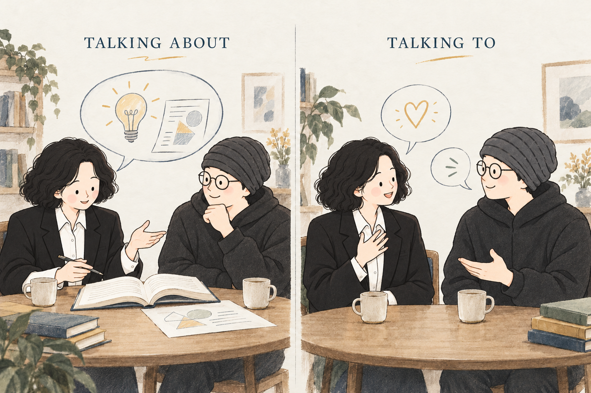

『게슈탈트 심리치료』
지금의 경험을 직접 표현하기
김정규 교수님은 대인관계의 접촉을 설명하며, 그 순간의 내적 경험을 상대에게 표현하는 일을 강조합니다. 설명이나 분석으로만 이야기를 이어가기보다, 대화하고 싶은 사람에게 자신의 감정과 욕구를 직접 전하도록 안내합니다.
동시에 표현은 상황에 맞아야 하며, 나와 상대가 받아들일 수 있는 수준에 맞추어 단계적으로 이루어져야 한다고 설명합니다.
TALKING TO · 우리의 대화
지금 내 마음에서 일어나는 것을,
내 앞의 당신에게 건네는 대화.
김정규 교수님의 『게슈탈트 심리치료』와 『뉴런하우스』 부록을 바탕으로, 함께 읽고 대화할 때의 ‘너에게 말하기’를 소개합니다.
Talking About과 Talking To 비교하기 ↓같은 마음, 다른 말의 방향
“그 사람은 내 말을
잘 들어주는 사람이야.”
“네가 내 말을 기다려 줘서,
나는 마음이 놓여.”
낭독모임을 위해 만든 대화 예시입니다.
01 / 말의 방향
이 안내에서는 Talking About을 ‘설명하기’, Talking To를 ‘너에게 말하기’로 풀어 씁니다. 설명하기는 주제에 관한 생각과 정보를 전달하는 말이고, 너에게 말하기는 지금 내가 느끼는 마음을 상대에게 직접 표현하는 말입니다.

TALKING ABOUT설명하기주제에 관한 생각과 정보를 전합니다.
TALKING TO너에게 말하기지금 느끼는 마음을 너에게 건넵니다.
| 살펴볼 점 | Talking About설명하기 | Talking To너에게 말하기 |
|---|---|---|
| 말의 초점 | 사람·사건·주제에 관한 생각과 정보를 설명합니다. | 지금 너와 함께 있는 내가 무엇을 느끼는지 전합니다. |
| 대화의 중심 | 설명하고 이해하려는 주제와 내용에 초점을 둡니다. | 지금 너와 나 사이에서 일어나는 경험과 응답에 초점을 둡니다. |
| 출발하는 질문 | “그 사람은 왜 그랬을까?” | “그 말을 듣는 나는 어떤 마음이지? 너에게 무엇을 전하고 싶지?” |
책의 내용을 이해하고 생각을 정리하는 데에는 Talking About도 필요합니다. 그 이야기를 나눈 뒤, 지금 서로에게 느끼는 마음까지 전해 보면 대화가 한 걸음 더 이어질 수 있습니다.
02 / 이렇게 건네 볼까요
아래는 모임에서 만날 법한 상황으로 새로 쓴 예시입니다. 정해진 대사처럼 외우기보다, 나에게 실제로 일어나는 마음을 찾아보세요.
TALKING ABOUT · 설명하기
“저 친구는 참 배려가 깊어.”
TALKING TO · 너에게 말하기
“내가 말을 고를 때 기다려 줘서 고마워. 네 앞에서는 천천히 말해도 괜찮다는 마음이 들어.”
TALKING ABOUT · 설명하기
“그 사람은 남의 말을 잘 안 듣는 것 같아.”
TALKING TO · 너에게 말하기
“아까 내가 말하는 중에 이야기가 바뀌었을 때 서운했어. 내 이야기를 조금 더 들려주고 싶어. 지금 괜찮을까?”
TALKING ABOUT · 설명하기
“저런 경험을 하면 사람은 외로울 수 있지.”
TALKING TO · 너에게 말하기
“네 이야기를 들으니 마음이 먹먹해. 무슨 말을 해야 할지 모르겠지만, 지금 네 곁에서 더 듣고 싶어.”
‘너는 왜 늘 그래?’처럼 상대를 단정하는 말은 ‘너’를 부르더라도 내 마음을 드러내기 어렵습니다. 내가 보고 들은 장면, 그때의 느낌, 바라는 것을 나의 경험으로 전해 보세요.
03 / 두 책에서 만난 안내
『게슈탈트 심리치료』
김정규 교수님은 대인관계의 접촉을 설명하며, 그 순간의 내적 경험을 상대에게 표현하는 일을 강조합니다. 설명이나 분석으로만 이야기를 이어가기보다, 대화하고 싶은 사람에게 자신의 감정과 욕구를 직접 전하도록 안내합니다.
동시에 표현은 상황에 맞아야 하며, 나와 상대가 받아들일 수 있는 수준에 맞추어 단계적으로 이루어져야 한다고 설명합니다.
『뉴런하우스』 부록
「너에게 말하기 — 만남의 순간」에서는 자주 만나고 말을 많이 나누어도 깊이 연결되지 못할 수 있다고 이야기합니다. 진정한 만남을 서로에 대한 편견과 평가를 내려놓고, 있는 그대로의 나와 너를 받아들이는 경험으로 설명합니다.
‘너에게 말하기’에는 잘 정리된 설명 너머로 내 마음을 보여 주고, 상대의 마음을 만나는 의미가 담겨 있습니다.
04 / 낭독 뒤, 작은 시도
어떤 문장이나 친구의 이야기가 마음에 남았나요? 지금 몸의 느낌이나 감정은 어떤가요?
“○○아, 네 이야기를 듣고 내 마음에 남은 걸 전해도 될까?” 상대가 들을 수 있는지도 살펴봅니다.
“나는 지금 …한 마음이야.” 한두 문장으로 시작해도 좋습니다. 말을 건넨 뒤에는 그 사람에게 어떻게 닿았는지 들어봅니다.
수평어는 서로를 존중하며 친구처럼 마음을 나누기 위한 약속입니다. 익숙한 말투로 시작하셔도 좋고, 아직 말이 떠오르지 않으면 듣고 계셔도 좋습니다. 마음을 얼마나, 언제 나눌지는 각자가 정합니다.
이 안내의 바탕
위 두 책을 바탕으로 낭독모임을 위해 풀어 쓴 안내입니다. 비교표와 대화 예시, 모임에서의 시도는 책의 원문 인용이 아닌 모임용 해설입니다.
모두의 새벽 + 낭만북클럽 · 시즌 18
『뉴런하우스』를 읽으며, 우리 사이의 대화도 함께 만나 보세요.
시즌 18 신청하고 인사 남기기 →